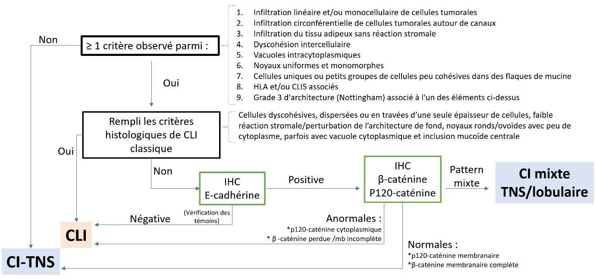

Diagnostic histopathologique du carcinome lobulaire infiltrant
On distingue les formes classiques et les formes non classiques de CLI. Les formes non classiques de CLI peuvent correspondre à des variants cytologiques (ex : apocrine, pléomorphe) ou architecturaux (ex : solide, alvéolaire). Bien que la description de la plupart de ces sous-types de CLI soit ancienne, certains n’ont été que récemment identifiés (CLI avec mucine extra cellulaire, CLI solide-papillaire, CLI avec éléments tubulaires) et peuvent être important à connaitre pour des raisons diagnostiques (différentiel avec d’autres types de carcinomes mammaires) ou pronostique (CLI avec mucine extra cellulaire étant décrit comme étant associé à un mauvais pronostic) (Christgen et al., 2021). A noter que les formes non classiques de CLI sont rarement pures, associant souvent différents patterns architecturaux entre eux ou avec un contingent classique (CLI mixte - à ne pas confondre avec les carcinomes mixtes associant deux types histologiques différents [ex : carcinome mixte de type non spécifique et lobulaire]).
Afin d’améliorer la reproductibilité du diagnostic de CLI et de standardiser les pratiques, le consortium européen sur les CLI (ELBCC) a récemment proposé des recommandations explicitant les critères diagnostiques de CLI et guidant l’utilisation de l'immunohistochimie (De Schepper et al., 2024). Une version simplifiée de cet algorithme diagnostic est présenté sur la Figure ci-dessous.

Figure. Version simplifiée des recommandations du consortium européen sur les carcinomes lobulaires (ELBCC) pour le diagnostic des CLI. (Adapté de De Schepper et al., 2024). CLI : carcinome lobulaire infiltrant. CI-TNS : carcinome infiltrant de type non spécifique. Mb : membranaire. HLA : hyperplasie lobulaire atypique. CLIS : carcinome lobulaire in situ.
Le diagnostic de CLI est avant tout morphologique : en présence d'un CLI classique typique, l'immunohistochimie E-cadhérine n'est pas nécessaire pour affirmer le diagnostic, elle ne doit donc pas être réalisée. En effet, ~15% des CLI conservent une expression de la E-cadhérine (habituellement anormale, membranaire incomplète et d'intensité diminuée, ou plus rarement cytoplasmique), sa positivité n'exclue ainsi pas le diagnostic en cas de morphologie lobulaire caractéristique. Le CLI classique typique est définit comme une infiltration de cellules tumorales dyscohésives, dispersées ou en travées d’une seule épaisseur de cellules, ayant des noyaux ronds/ovoïdes avec peu de cytoplasme, présentant parfois une vacuole cytoplasmique et inclusion mucoïde centrale ; la réaction stromale/perturbation de l’architecture de fond est en générale faible.
En cas de forme non classique de CLI (variants) ou de carcinome possédant seulement certaines caractéristiques évocatrices de CLI (mais pas toutes), une immunohistochimie complémentaire est recommandée. En premier lieu, il convient de réaliser une immunohistochimie dirigée contre la E-cadhérine. Le clone le plus utilisé est le NCH38, ciblant la portion extra-cellulaire de la E-cadhérine (De Schepper et al., 2022). Les clones semblant avoir les meilleures spécificités et performances diagnostiques sont les clones NCH-38 et ECH-6. Il est à noter que l’utilisation du clone 36 n’est pas recommandée, en raison de sa réactivité croisée avec la P-cadhérine (bien que les performances diagnostiques de ce clone ne semblent pas significativement affectées) (De Schepper et al. 2024).
En cas d'expression conservée de la E-cadhérine, il est recommandé de réaliser les immunohistochimies ciblant d'autres membres du complexe E-cadhérine. En cas d'altération du pattern d’expression telles de la β-caténine (absence d’expression) ou de la p120-caténine (expression cytoplasmique anormale), le diagnostic de CLI est confirmé. Dans les autres cas, il faut évoquer un carcinome infiltrant de type non spécifique (CI-TNS), ou bien un carcinome mixte TNS/CLI (notamment en cas de pattern IHC mixte ou bien en présence d'un contingent représentant 10-90% de surface tumorale de morphologie lobulaire typique).
A noter que certaines tumeurs de morphologie lobulaire peuvent présenter une différenciation glandulaire. Ces tumeurs peuvent recouvrir au moins trois entités différentes. La première, correspond aux CLI tubulo-lobulaires ; ces tumeurs, bien que classées dans les CLI dans l’OMS, pourraient en fait correspondre à des CI-TNS particuliers du fait de la positivité de la E-cadhérine (Christgen et al., 2021). La deuxième, est une entité récemment décrite, appelée carcinome lobulaire avec éléments tubulaires; cette tumeur est E-cadhérine négative mais re-exprime la P-cadhérine expliquant la formation de tubes (Christgen et al., 2020). La troisième possibilité correspond aux carcinomes infiltrants mixtes, de type lobulaire et non spécifique (représentant 5 % des carcinomes mammaires invasifs), associant deux contingents ≥10% ayant des caractéristiques de CLI et de CI-TNS. Cette dernière entité peut montrer une positivité de la E-cadhérine dans le contingent non spécifique et une E-cadhérine souvent positive anormale (ou parfois négative) dans le contingent lobulaire (Rakha et al., 2009; McCart Reed et al., 2018).
Références
Christgen M, Cserni G, Floris G, et al. Lobular Breast Cancer: Histomorphology and Different Concepts of a Special Spectrum of Tumors. Cancers (Basel) 2021;13(15):3695.
De Schepper M, Koorman T, Richard F, et al. Integration of Pathological Criteria and Immunohistochemical Evaluation for Invasive Lobular Carcinoma Diagnosis: Recommendations From the European Lobular Breast Cancer Consortium. Mod Pathol 2024;37(7):100497.
De Schepper M, Vincent-Salomon A, Christgen M, et al. Results of a worldwide survey on the currently used histopathological diagnostic criteria for invasive lobular breast cancer. Mod Pathol 2022;35(12):1812–20.
Christgen M, Bartels S, van Luttikhuizen JL, et al. E-cadherin to P-cadherin switching in lobular breast cancer with tubular elements. Mod Pathol 2020;33(12):2483–98.
McCart Reed AE, Kutasovic JR, Nones K, et al. Mixed ductal-lobular carcinomas: evidence for progression from ductal to lobular morphology. J Pathol 2018;244(4):460–8.
Rakha EA, Gill MS, El-Sayed ME, et al. The biological and clinical characteristics of breast carcinoma with mixed ductal and lobular morphology. Breast Cancer Res Treat 2009;114(2):243–50.